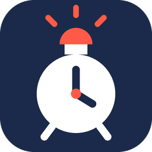

Тривожник
Будильник, що чекає відбою
- Тривога у твоїй громаді — будильник мовчить і дає поспати.
- Відбій — одразу будить.
- Залізний будильник дзвонить у вказаний час за будь-яких умов.
- Обираєш, при якій тривозі спати: будь-якій чи лише червоній.
- Область, район або громада — на карті тривог чи через пошук.
- Безкоштовно, без реклами й реєстрації.
Скоро в Google Play. Підпишись — повідомимо про запуск першими.
Підтримати розробку
Тривожник безкоштовний і без реклами. Перша ціль — Apple Developer для iPhone-версії (5 000 ₴). Усе понад ціль піде на розвиток: сервер для сповіщень і просування.
Задонатити на банку ☕